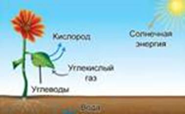
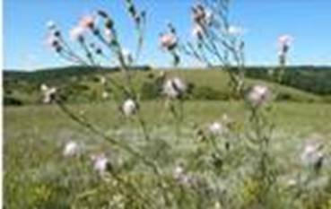
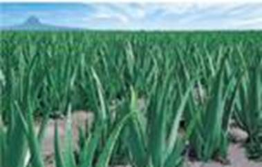
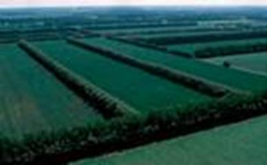

Экология – наука об отношениях живых организмов и их сообществ между собой и с окружающей средой.
Экологический фактор – явление или объект, воздействующий на организм.
Экологические факторы:
· Биотические (живой природы) – воздействие на организм других живых существ или продуктов их жизнедеятельности (пища, хищники, паразиты)
· Абиотические (неживой природы) – физические условия среды (температура, влажность, освещенность, химический состав окружающей среды)
Экологическая ниша – совокупность условий, необходимых для существования определенного вида. Любой живой организм способен существовать только при определенных значениях экологических факторов.
Солнечный свет служит источником энергии для растений, так как необходим для осуществления фотосинтеза (см. Рис. 1). Также свет оказывает регуляторное действие на рост растения, цветение, плодоношение.

Рис. 1. Фотосинтез
Для тимофеевки и земляники освещенность необходима уже для прорастания семян.
Растения по отношению к освещенности:
1. Светолюбивые (гелиофиты). Способны расти только на ярко освещенных поверхностях (ковыль, пшеница, сосна, робиния).
2. Тенелюбивые (сциофиты). Могут расти только в затененных местах. На ярком солнце могут появиться ожоги (вороний глаз, ветреница).
Теневыносливые. Хорошо растут в освещенных местах, но могут выносить и небольшое затенение (липа, дуб, ясень).
Для любых растений губительны как перегрев, так и слишком низкая температура. Слишком высокие температуры приводят к потере влаги, ожогам, разрушению хлорофилла.
Действию высоких температур подвержены гелиофиты, в связи с этим они имеют ряд приспособлений: могут поворачивать листья, сбрасывать листовую пластинку, оставляя только черешок, листья превращены в колючки (кактусы). Уменьшение площади листовой пластинки помогает гелиофитам избежать чрезмерного испарения воды. Густое белое опушение или серебристая окраска листьев помогают растению отражать большую часть падающих на него лучей.
При замерзании воды в клетках образуются кристаллы льда, которые их повреждают. При понижении температуры до минусовых значений химические процессы в клетке замедляются, возникает дисбаланс, который может привести к гибели.
Внешний вид растений холодных мест обитания: вечнозеленые, с мелкой жесткой листвой, низкие (не превышают высоту снежного покрова) (карликовая береза, ива).
Многие растения на засушливый и холодный периоды могут впадать в состояние покоя, когда все жизненные процессы замедлены. У древесных растений древеснеют побеги этого года и увеличивается толщина пробкового слоя. Травянистые растения утрачивают все надземные органы. Кустарники и деревья сбрасывают листву. Водные растения опускаются на дно (ряска), сохраняют только придонные листья (кувшинка).
Склерофиты – растения засушливых мест обитаний (василек ложнопятнистый (см. Рис. 2)). Имеют жесткие листья.

Рис. 2. Василек ложнопятнистый
Суккуленты – растения засушливых мест обитания, которые способны запасать влагу в мясистых образованиях тела – стеблях, листьях (алоэ (см. Рис. 3), кактусы).

Рис. 3. Алоэ
Растения по отношению к влажности
1. Водные растения и растения, обитающие в условиях избытка влаги
2. Растения сухих местообитаний
3. Растения местообитаний с нормальным увлажнением
Химический состав почвы
Растения из почвы получают минеральные вещества. Больше всего они нуждаются в соединениях фосфора, азота, калия. Также им необходимы соединения бора, марганца и железа.
Животные питаются растениями, поэтому растения имеют защитные приспособления: иглы, колючки (акация), жесткая листва (степные растения), яды (пасленовые растения).
Другие животные вступают с растениями в мутуалистические отношения: пчелы, бабочки, опыляют растения. Птицы разносят их семена, поедая вкусные ягоды.
Мутуализм – взаимовыгодное отношение между 2 организмами.
Грибы, бактерии, паразитируют на растениях и вызывают их заболевания (фитофтороз, мучнистая роса).
Друг с другом растения вступают в конкурентные взаимодействия. Также существуют растения-паразиты (омела белая).
Крупные растения затеняют более мелкие, таким образом, существует деление на ярусы. Растения-эпифиты (орхидеи) могут использовать других в качестве опоры.
Растения участвуют в поддержании постоянства состава воздуха (выделяют кислород и поглощают углекислый газ).
Принимают участие в формировании почв (корневые системы поглощают одни вещества и выделяют другие). После гибели растения большая часть веществ возвращается обратно в почву.
Корни растений закрепляют склоны холмов, оврагов, предохраняют почву от эрозии (разрушения).
Лесопосадки (см. Рис. 4) используются для защиты полей от суховеев и пожаров.

Рис. 4. Лесопосадки
Крупные древесные растения, испаряющие большое количество влаги. Могут быть использованы для осушения заболоченных земель (эвкалипты).
Люди вырубают леса, осушают болота, орошают засушливые земли. Так уничтожаются естественные места обитания и создаются условия для сельхоз культур. Выводятся новые сорта растений.
Вырубка лесов может приводить к потере плодородного слоя почвы и образованию пустынь. При неграмотном орошении может происходить заболачивание почв.
В 3 одинаковых горшка с одинаковой почвой посадите 3 колеуса. Выращивайте их месяц в разных условиях: один на ярком свету и с дополнительной подсветкой, второй – при нормальном дневном освещении, третий – в полутени – в 3 метрах от окна. Наблюдайте за ростом и развитием растений. Попробуйте сделать выводы.
Схематично зарисуйте форму крон деревьев (березы, липы, сосны), выросших в условиях различной освещенности. Сделайте выводы.
Крайняя форма приспособления растений к экстремальным условиям окружающей среды (холоду, сухости, жаре) – это анабиоз.
Анабиоз – это состояние организма, при котором следы жизнедеятельности малы настолько, что отсутствуют видимые признаки жизни.
Так, мхи переносят зимнее промерзание или полное высыхание в состоянии анабиоза, из которого они возвращаются к нормальной жизнедеятельности после оттаивания или дождя.
Список литературы
1. Биология. Бактерии, грибы, растения. 6 кл.: учеб. для общеобразоват. учреждений / В.В. Пасечник. – 14-е изд., стереотип. – М.: Дрофа, 2011. – 304 с.: ил.
2. Тихонова Е.Т., Романова Н.И. Биология, 6. – М.: Русское слово.
3. Исаева Т.А., Романова Н.И. Биология, 6. – М.: Русское слово.
Дополнительные рекомендованные ссылки на ресурсы сети Интернет
1. Biolicey2vrn.ucoz.ru (Источник).
2. Rae.ru (Источник).
3. Travinushka.ru (Источник).
Домашнее задание
1. Биология. Бактерии, грибы, растения. 6 кл.: учеб. для общеобразоват. учреждений / В.В. Пасечник. – 14-е изд., стереотип. – М.: Дрофа, 2011. – 304 с.: ил. – с. 263, задания и вопрос 5, 6, 7 (Источник).
2. Какие существуют группы растений по отношению к свету. Охарактеризуйте их.
3. Какие выделяют экологические факторы? Охарактеризуйте их.
4. * Выберите 2 растения разных видов и отнесите их к экологическим группам по отношению к свету, влажности, температуре.